- Overview
- Exporting a Project
- Importing a Project
- Importing Processes with Email Events
- Importing an Existing Project Inside ProcessMaker
- Create a Completely New Process Without Changing the Current Process
- Update the Current Process, Overwriting all Tasks and Steps
- Import Processes with Existing Groups
- Importing and Exporting a Process Diagram
- How to Use an Imported Process
- Export PM Tables and Report Tables
- Import PM Tables and Report Tables
Overview
Projects and processes can be imported and exported from one installation of ProcessMaker to another. These procedures only import or export the definition of the process, which includes Dynaforms, Input, Output Documents, Triggers and group accounts. However, they do not import or export user accounts, roles, any case (if you need additional information on the transfer of ProcessMaker installations visit the ProcessMaker backup and restore), assignment rules, process supervisors, PM Tables and Report Tables (PM Tables and Report Tables possess their own interface to export them and then import them again).
Additionally, it is also possible to export processes to .bpmn files that can later be opened in other BPMN tools. Also, inside ProcessMaker, the Import option of the designer allows importing .bpmn files that contain diagrams of BPMN projects created inside external tools.
Exporting a Project
Warning: Please avoid including the slash character (/) in the name of the process because the process exportation may crash. This is a known issue that will be fixed in upcoming ProcessMaker versions.
Export a process by following the next steps:
- Go to the Designer tab and select the process to export. After selecting it, the Export button will be enabled in the toolbar. Click on it to export the process.
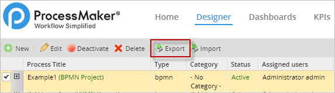
- The exported process will automatically be downloaded to the user’s computer. Usually the downloaded file will be located in the Downloads folder unless the user has customized the browser downloads.
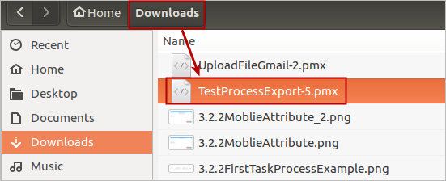
- A process can be also exported by right clicking on the process and selecting the Export option as seen in the image below.
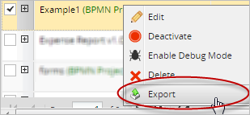
Export a Process from the Process Map
It is also possible to export a process from the Process Map by following the steps ahead:
- Open a process by double-clicking on it to display it on the Process Map (A project can also be opened by clicking on the Edit option.)
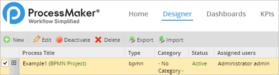
- Once the Process Map is opened, select the "Export Process" option of the Top toolbar.

The download of a .pmx file will start automatically. Save the file after the download finishes. The exported .pmx file can then be imported into another ProcessMaker installation/workspace. Take into consideration that all exported files contain the XML definition of the process which, includes the following:
- Variables
- Message Types
- Dynaforms
- Input Documents
- Output Document
- Triggers
- Database Connections
- Templates
- Public Files
- Permissions
- Case Tracker
- Supervisors (they are preserved as long as they are Supervisor Groups)
- Assigned Groups and their definition from the admin tab. The members of the groups are not exported. Users must be assigned once the process is imported
Take into consideration that elements not listed will not be exported. For instance, assigned users cannot be exported, and as mentioned before, report tables have their own interface to import/export tables so they are not included in the .pmx file. To export a process diagram (.bpmn files), review the Importing and Exporting a Process Diagram section.
Note: To only export certain elements of the process, review the Promotion Manager enterprise feature.
Importing a Project
First, consider the following:
- Files belonging to the old ProcessMaker designer have the
.pmextension, while files from the new BPMN designer have the.pmxextension. - Processes from the new BPMN designer (
.pmxfiles) can not be imported into older versions of ProcessMaker, before version 3.0. - Use the same option to import either
.pm,.pmx, or.bpmnfiles inside ProcessMaker 3.0.
To import a process from ProcessMaker follow the next steps:
Note: When importing a process that does not exist in an environment, the new process creation date changes to the current date.
- In the Designer tab, select the Import button.
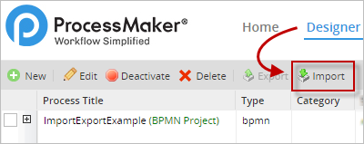
- A new window within the Designer will open where the file to be uploaded must be selected. Click on the file icon to open the file navigator.

- Select the .pmx file to be imported. The file can be found in the Downloads folder (unless it is configured to be stored in a different folder). Once the file is selected click on the Open button as seen in the image below.

- The name file will be shown in the Import Process window, but it is not imported yet. Remember that the file being uploaded must have a .pmx or a .bpmn (for only diagrams) extension, otherwise an error message will be shown and the file won’t be uploaded. If the extension is correct then click on the Upload button to import the process.

- Once the file is uploaded it automatically opens the process in the Process Map. Finally, all imported files are shown in the list of projects or the Designer. Now, this process can be worked on by altering or erasing any of its elements.
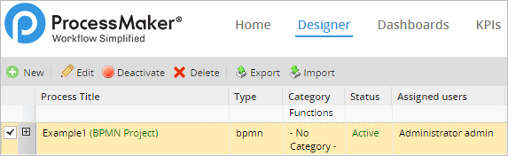
The elements that will be imported along with the diagram of processes are variables, Dynaforms, input documents, output documents, triggers, templates and groups (without users). PM Tables used in the process, users and process supervisors will not be imported. Therefore, it is recommended to create a backup of these elements when exporting a process. Take special consideration when the process has report tables and PM tables. Remember that they have their own interface to import and export tables, located at ADMIN > Settings > PM Tables. To learn how to export and import PM tables and report tables read this section and the section that follows.
When importing a process to another installation/workspace of ProcessMaker, it is possible to change the process UID or keep the UID as it is. Then there will be two options which are:
- Create a new UID for this process: Creates a new UID for processes to be differentiated. This new UID will be randomized and will have 32 characters, which all UIDs must have.
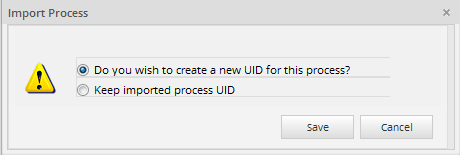
- Keep imported process UID: Keeps the current UID of the process that is being imported into the installation/workspace.

Note: Take into consideration that this new window that asks whether to create a new process UID or keep the process UID appears every time a process is imported. Since processes must have a unique name and UID, use this window to better maintain processes.
Note: The processes are unique, they are identified by UID and name.
Importing Processes with Email Events
When importing processes that contain email events, such as intermediate email events or end email events to a new installation/workspace, the reference to the original email server is replaced by the default email server of the new installation/workspace where the process is being imported.
This means it is not necessary to configure any email event again. In case the new installation/workspace doesn't have an email server configured, the reference to the email server will not be configured.
Importing an Existing Project Inside ProcessMaker
When importing a process to another installation/workspace there is the possibility that a process with the same name in its definition might already exist. When this happens, a new window will appear where the following two options need to be considered:
- Create a completely new process without changing the current process.
- Update the current process, overwriting all tasks and steps.
Both options will be explained in sections ahead.
Note: When importing a process that already exists in an environment, the process keeps the environment process creation date.
Create a Completely New Process Without Changing the Current Process
This is the first option in the window that is shown:
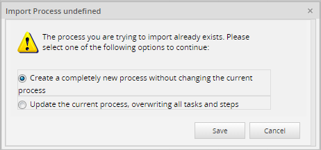
This option creates a completely new process with different UIDs for Dynaforms, input documents, output documents, etc. Group assignment to tasks will be also imported (only the names of the group; if the name of the group does not exist in the workspace, it is created in ADMIN > Users > Groups). Unfortunately, the information that will be lost and needs to be recreated are the report tables, PM tables and user assignments.
When this option is selected a new process will be created and opened in the Process Map. The name of the new process has the format "Copy of - Process_Name - Date, Time"
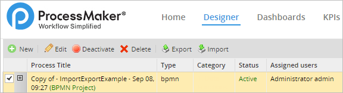
Update the Current Process, Overwriting all Tasks and Steps
This option means completely overwriting the existing process. All tasks, Dynaforms, input documents and output documents will have the UID's of the imported process. This option is useful if developing a new version of a process on a development server, then needing to overwrite the current process being used in a production server. The name of the process imported will have the same format as the case before.

Some precautions need to be taken when overwriting processes that have active cases. If the existing process contains tasks with active (in-progress) cases, the process can NOT be updated with a process that doesn't contain these tasks and the following message will display:

If maintaining a historical record of previous cases is necessary, there is no guarantee that the records will be accessible in the updated process.
Import Processes with Existing Groups
A new window will appear that includes the following two options, which need to be considered:
- Rename the imported groups
- Merge the imported groups, with the preexistent local groups (no changes will be made to the local groups)
Rename the Imported Groups
For this option, the following window will be shown to the user:
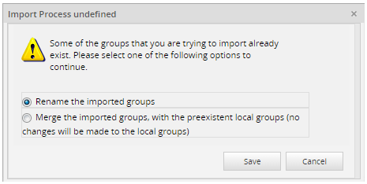
This option allows the user to rename the groups that are being imported. For example, if there is a group named "TestGroup" then by selecting the first option, as seen in the image above, a new group will be created with the name of "TestGroup1".
Merge the Imported Groups with the Pre-existing Local Groups
This option is shown when the process has a group assigned to any of the tasks with the same name as one of the groups created already in ProcessMaker.
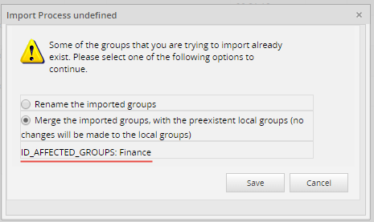
If the user chooses this option, it will merge the groups and maintain the name of the group. For example, if there is a group named "Employees", and the process that wants to be imported has also a group "Employees", then it will merge the groups. Take into consideration that groups can be imported or merged, but the users inside the groups are not imported, so they have to be manually reassigned. As of version 3.0.1.8, note that the groups that are being merged will be listed under the Merge option, so the user knows which groups are being merged.
Importing and Exporting a Process Diagram
A process diagram can be exported as a BPMN file and it can be imported into an external BPMN application that supports this format.
Similarly, BPMN diagrams created in a different BPMN applications can be exported and imported into ProcessMaker as long as the file has a .bpmn extension and they fulfill BPMN standards. Diagrams will export the following elements:
- Gateways
- Pools
- Lanes
- Tasks
- Comment
Note that the task's configuration will NOT be included.
| Warning: Diagrams that include data objects (data entry and/or data output controls) may get corrupted when the user uses the Export diagram option. This is a known issue that will be fixed in upcoming versions of ProcessMaker. |
To export a diagram in BPMN format from ProcessMaker proceed to the next steps:
- Select a process from the designer and double click on it. A process can also be opened by clicking on the Edit option in the top toolbar.
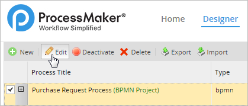
- Once the process is opened in the Process Map, select the Export Diagram option.

- The diagram will be downloaded to the local computer with the extension .bpmn
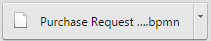
- The .bpmn extension allows the user to import the diagram into a different installation/workspace. To do so, click on the Import button in the designer (in a different ProcessMaker installation/workspace).
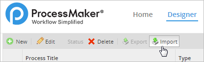
- Click on the Upload button to upload the file to the installation/workspace of ProcessMaker.
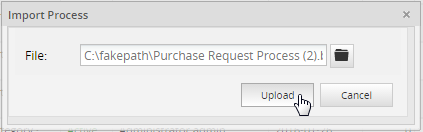
The diagram will be opened in the Process Map as seen in the image below.
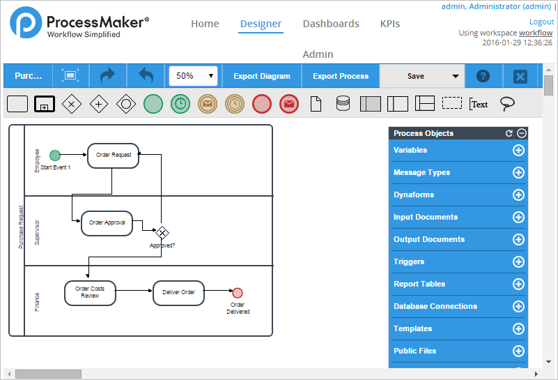
Note that if a process with the same name already exists, a message will be displayed asking the user if he/she wants to overwrite the process.
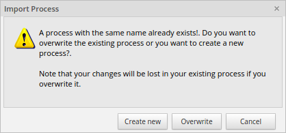
If the Overwrite option is selected, the imported diagram will replace all the content in the existing process. This means that any Dynaform, Input Document, Output Document, trigger, message, Report Table, database connection, variable, or supervisor will be deleted, even if the diagram is the same as the one imported.
How to Use an Imported Process
Before using an imported process, assign users to each task. Remember that user accounts are not imported with a process, so it is necessary to create valid user accounts. Right-click on each task in the process map to assign those users.
In some processes, a user group is already assigned to a task. In that case, you’ll need to assign your own users to that group. Under the users tab, create user accounts and assign them to the appropriate groups. Once valid users have been added to tasks or groups then a process can be run. Log in as the user assigned to the first task and start a case. Then log in with the user accounts assigned to the subsequent tasks and continue to run the process from the user side.
In the list below, find ProcessMaker elements and configurations that are successfully imported when a process is moving from one workspace/installation into another:
Elements imported:
- Dynaforms
- Input Documents
- Output Documents
- Triggers
- Group assignment in each task
- Database Connections
- Case Schedule configuration
- Event configuration
- Task configuration
- Email templates
Elements not imported:
- Users
- Process Permissions
- Process Supervisors
- Process Category
- PM Tables (They need to be exported and then imported separately)
- Department structure
- User assignment in each task
Export PM Tables and Report Tables
To export a PM table or a report table from inside a ProcessMaker installation/workspace, see export PM tables and report tables section of the wiki.
Import PM Tables and Report Tables
To Import a PM table or a report table from inside the ProcessMaker interface, see import PM tables and report tables section of the wiki.